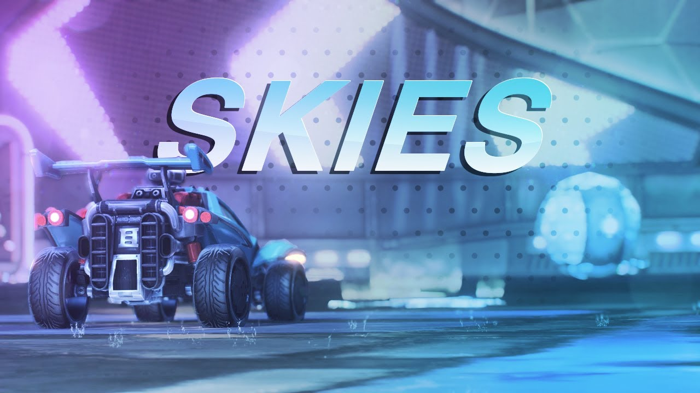
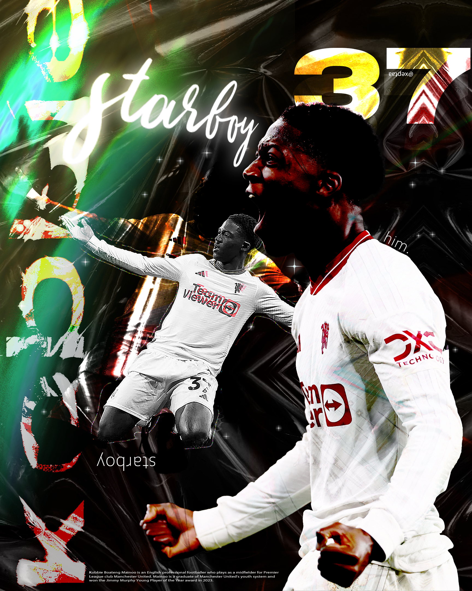
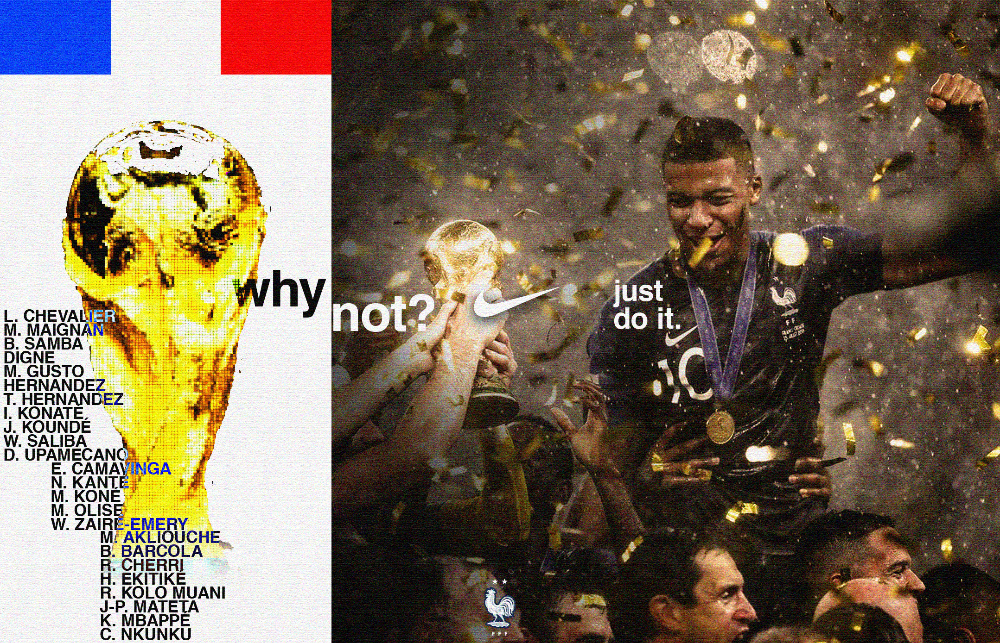
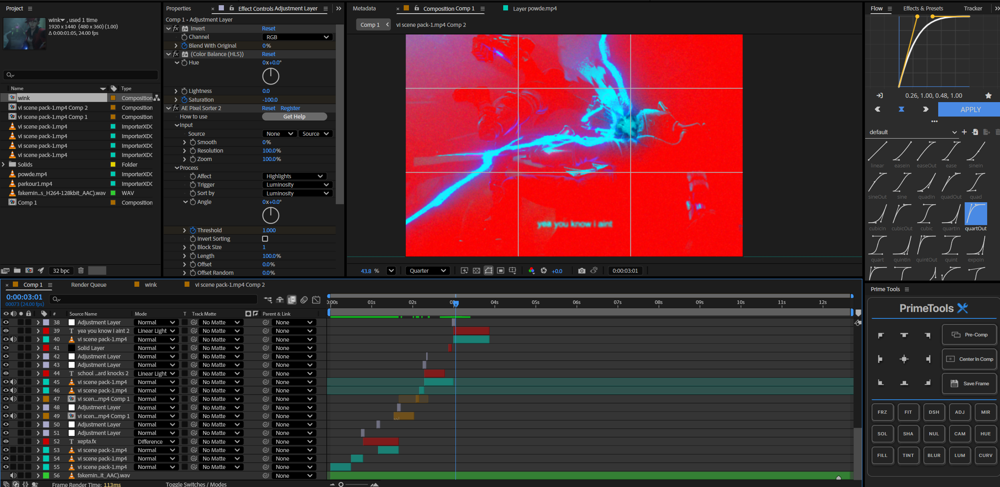

#fastlearner
#stilljustlearning
Hello! I'm Seb and recently I've been trying to figure out where and how I can use my creative energy for something meaningful. So I thought making this portfolio would be a fun way to show some of my projects and also practice some web design. (Although there isn't much happening here...)
I've always enjoyed design in Photoshop, from making thumbnails for terrible gaming montages to just messing around for school/personal projects.
some progression:
2020

2024

just then in like 30 mins

But lately I've been obssessed with "motion graphics and visual storytelling"
. . .
yeah no they're just tiktok edits (shameless promotion)
but there you can see some of my progression, I recently switched from using Davinci Resolve to After Effects and I'm quickly learning the ropes.
This is personally my favourite edit I've made so far:

..and finally, here's the website I created for my Major Work in Software Engineering (hover):